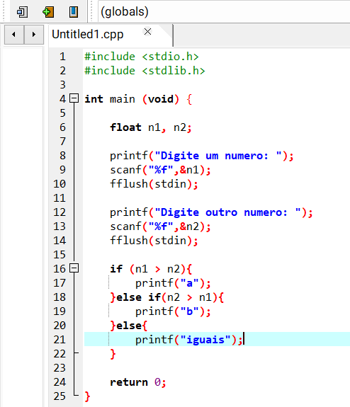
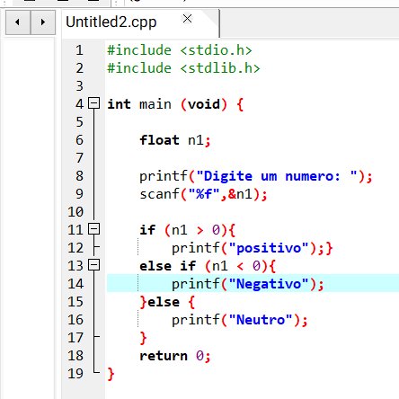
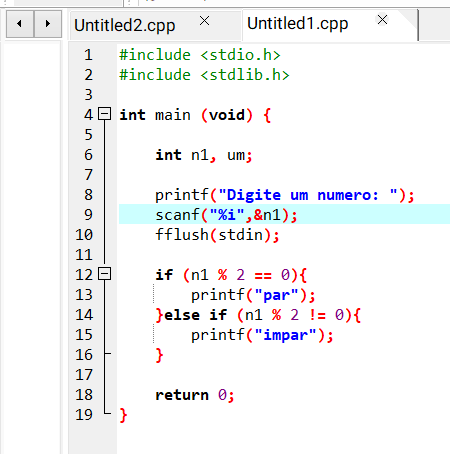
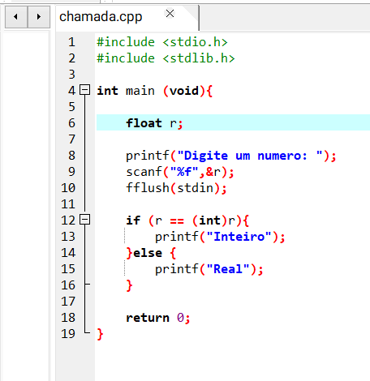

Exercícios
1) Faça um programa que peça dois números e imprima o maior deles;
2) Faça um programa que peça um valor e mostre na tela se o valor é positivo ou negativo;
3) Faça um programa que peça um número e imprima se o número é par ou ímpar;
Desafio
4) Faça um programa que peça um número e informe se o número é inteiro ou quebrado.
Respostas
1) Faça um programa que peça dois números e imprima o maior deles;

2) Faça um programa que peça um valor e mostre na tela se o valor é positivo ou negativo;

3) Faça um programa que peça um número e imprima se o número é par ou ímpar;

4) Faça um programa que peça um número e informe se o número é inteiro ou quebrado.
